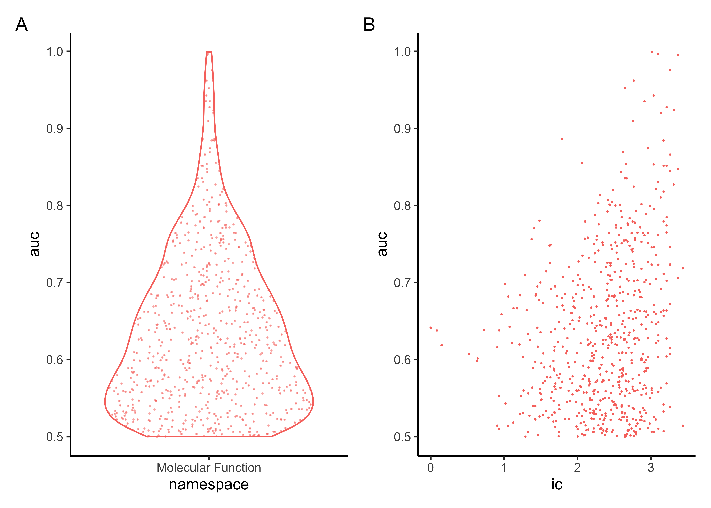

Section 3 Get started
Do prediction
library(tidyverse)
## pre-calculate affinity matrix estimated using 2-step short random walk kernel
## on a network of genetic interactions (ig.BioGRID_genetic)
df_mat <- Fang::oRWkernel(ig.BioGRID_genetic, steps=2) %>% as.matrix()
## define known gene annotations for each term
df_term <- org.Hs.egGOMF$info %>% mutate(ic=-log10(n/max(n))) %>% rename(term=name) %>% filter(n>=5)
## df_pred
## note: ~2 min runtime using single core (Mac)
message(sprintf("Start (%s) ...", as.character(Sys.time())), appendLF=T)
pb <- df_term %>% nrow() %>% progress_estimated()
df_term %>% select(term, member) %>% mutate(pred=map(member, function(x){
pb$tick()$print()
y <- df_mat
ind <- which(!is.na(match(colnames(y),x)))
## force to be 0 for the self of each seed gene
diag(y)[ind] <- 0
## how many genes used for the average
vec <- rep(length(ind), nrow(y))
vec[ind] <- length(ind) -1
## calculate predictive score
if(length(ind)>=5){
res <- apply(y[,ind], 1, sum) / vec
res %>% enframe(name="gene", value="score") %>% left_join(tibble(gene=x, seed=1), by='gene') %>% arrange(-score)
}else{
NULL
}
})) %>% filter(map_lgl(pred,~!is.null(.x))) %>% select(term,pred) -> df_pred
message(sprintf("Finished (%s) ...", as.character(Sys.time())), appendLF=T)
## also append a list-column storing seed genes per term
df_pred <- df_pred %>% mutate(seed=map(pred, ~.x %>% filter(!is.na(seed)) %>% pull(gene)))Gene-centric predictive score for each term is stored in a tibble df_pred, with 3 columns including 'term', 'pred' (a list-column containing details on gene-centric predictive score including 3 columns 'gene', 'score' for predictive score and 'seed' indicating whether or a seed gene), and 'seed' (seed genes).
df_pred
## # A tibble: 702 x 3
## term pred seed
## <chr> <list> <list>
## 1 molecular_function <tibble [3,198 × 3]> <chr [2,846]>
## 2 binding <tibble [3,198 × 3]> <chr [2,511]>
## 3 catalytic activity <tibble [3,198 × 3]> <chr [1,092]>
## 4 transcription regulator activity <tibble [3,198 × 3]> <chr [326]>
## 5 molecular function regulator <tibble [3,198 × 3]> <chr [275]>
## 6 molecular transducer activity <tibble [3,198 × 3]> <chr [161]>
## 7 transporter activity <tibble [3,198 × 3]> <chr [150]>
## 8 structural molecule activity <tibble [3,198 × 3]> <chr [130]>
## 9 translation regulator activity <tibble [3,198 × 3]> <chr [37]>
## 10 antioxidant activity <tibble [3,198 × 3]> <chr [9]>
## # … with 692 more rowsEvaluate prediction performance
## df_auc
df_term_pred <- df_term %>% inner_join(df_pred, by='term')
pb <- df_term_pred %>% nrow() %>% progress_estimated()
df_term_pred %>% mutate(auc=map2_dbl(member, pred, function(x,y){
pb$tick()$print()
res <- Fang::xClassifyPerf(prediction=y, GSP=x, GSN=NULL, verbose=F)$auroc
})) -> df_aucThe tibble df_auc contains term-centric performance measured by AUC (the column 'auc').
df_auc
## # A tibble: 702 x 10
## term id namespace distance member n ic pred seed auc
## <chr> <chr> <chr> <dbl> <list> <dbl> <dbl> <list> <list> <dbl>
## 1 molecula… GO:00… Molecular… 0 <chr [… 16335 0 <tibb… <chr … 0.641
## 2 binding GO:00… Molecular… 1 <chr [… 13424 0.0852 <tibb… <chr … 0.638
## 3 catalyti… GO:00… Molecular… 1 <chr [… 4870 0.526 <tibb… <chr … 0.607
## 4 transcri… GO:01… Molecular… 1 <chr [… 1596 1.01 <tibb… <chr … 0.698
## 5 molecula… GO:00… Molecular… 1 <chr [… 1451 1.05 <tibb… <chr … 0.514
## 6 molecula… GO:00… Molecular… 1 <chr [… 1274 1.11 <tibb… <chr … 0.621
## 7 transpor… GO:00… Molecular… 1 <chr [… 1010 1.21 <tibb… <chr … 0.620
## 8 structur… GO:00… Molecular… 1 <chr [… 548 1.47 <tibb… <chr … 0.677
## 9 translat… GO:00… Molecular… 1 <chr [… 121 2.13 <tibb… <chr … 0.647
## 10 antioxid… GO:00… Molecular… 1 <chr [… 75 2.34 <tibb… <chr … 0.603
## # … with 692 more rowsVisualise term-specific AUC (see A), further stratified by information content of terms (see B).
library(patchwork)
library(ggforce)
gp1 <- df_auc %>% ggplot(aes(x=namespace, y=auc, color=namespace)) + geom_violin() + ggforce::geom_sina(size=0.1, alpha=0.5) + theme_classic() + guides(color='none')
gp2 <- df_auc %>% ggplot(aes(x=ic, y=auc, color=namespace)) + geom_point(size=0.1) + theme_classic() + guides(color='none')
(gp1 | gp2) + plot_annotation(tag_levels='A')